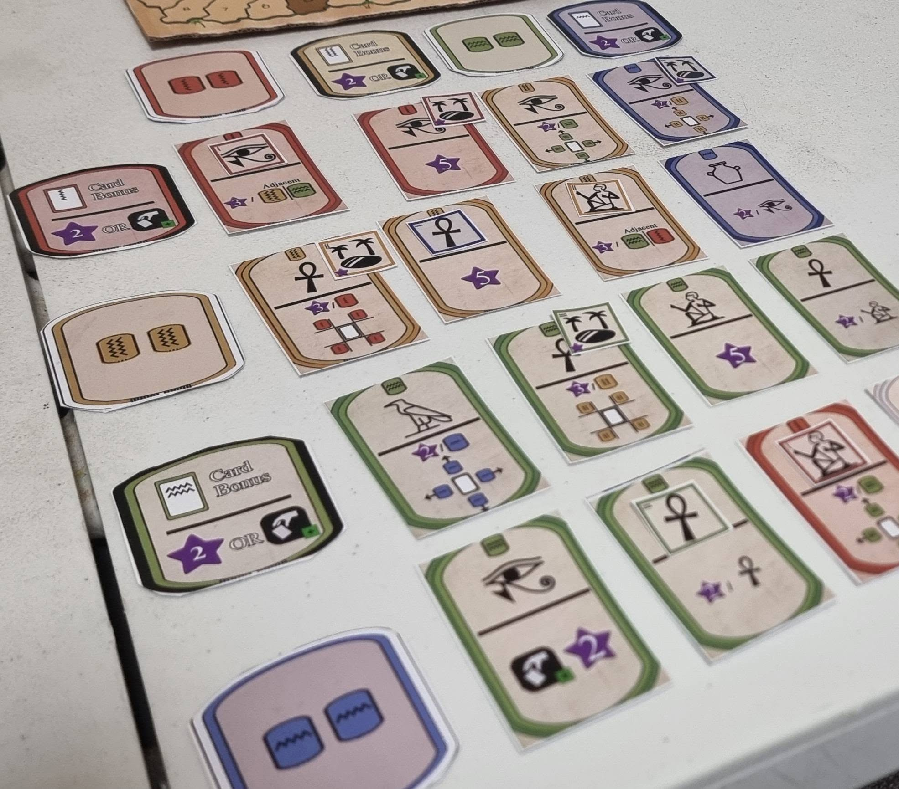

Overview
Tableau Builder meets spatial puzzle.
Hieroglyphs is a dynamic tableau builder where you position dual purpose cards in your 4x4 grid for both long term goals and instant benefits. You can also manipulate and move your cards around the grid with the power of the Egyptian Gods - each having game changing effects.
The player with the most points after the end game trigger occurs is the winner.

Key Features
- Dual-purpose cards: immediate abilities when played and hieroglyphs for long term goals
- Positional tableau building: both abilities and hieroglyphs depend on where each papyrus is placed
- Manipulation: change your board with God abilities, the Obelisk track and priests